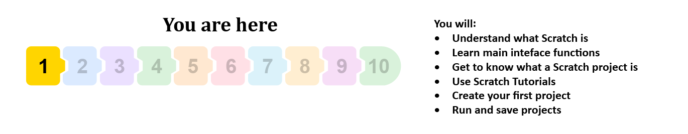
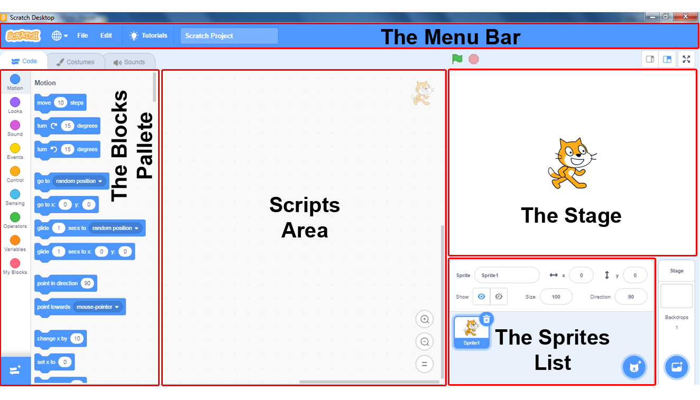

Mjedisi i programimit Scratch¶

Dëshironi të krijoni lojën tuaj kompjuterike, histori të animuar, udhëzime ose prezantim? Scratch është një gjuhë programimi që ju lejon të krijoni të gjitha këto gjëra dhe më shumë.
Për dallim nga shumica e gjuhëve të zakonshme të programimit, Scratch është një gjuhë programimi vizuale - në vend që të shtypni komanda duke përdorur tastierën, programet krijohen duke lidhur blloqe të koduara me ngjyra, të cilat paraqesin komanda të ndryshme, diçka si bërja e objekteve të ndryshme duke përdorur tulla LEGO.
Në Scratch, projektet janë krijuar. Hapi i parë në krijimin e një projekti është shtimi i Sprites që do të marrë pjesë në të. Pamje, tinguj dhe sjellje të ndryshme mund t’i bashkëngjiten të gjitha sprites. Sjellja e një sprite përshkruhet nga Script. Projekti përmban një ose më shumë skenare; secila është e lidhur me një spërkatje ose një fazë - vendi ku zhvillohet projekti.
Për të shkruar një program në Scratch, së pari, është e nevojshme të njiheni me mjedisin në të cilin janë krijuar programet ose ndërfaqen e tij.
Ndërfaqja e programimit Scratch.
Figura e mëposhtme tregon ndërfaqen e gjuhës programuese Scratch.
{kind=link}
Së pari, do të mësojmë për funksionet themelore të pjesëve kryesore të tij, dhe në mësimet e mëposhtme do të njihemi me përbërësit e tjerë të mjedisit.
Skena është vendi ku do të vijnë në jetë tregimet, lojërat dhe animacionet tuaja. Vetë skena është e palëvizshme, por ka sprites mbi të që mund të lëvizin dhe bashkëveprojnë me njëri-tjetrin.
Paleta Blocks është zona ku mbahen të gjitha komandat në dispozicion të gjuhës programuese Scratch. Quhet “paleta” sepse duket si një paletë që një piktor përdor ndërsa pikturon. Sidoqoftë, ndryshe nga një piktor, një programues krijon fotografi të drejtpërdrejta me objekte që bashkëveprojnë me njëri-tjetrin.
Zona e Skriptave është një vend ku janë krijuar skriptet. Për të bërë një skenar, duhet të tërhiqni blloqe nga Paleta e Blocks në Zonën e Skriptit dhe t’i kapni ato së bashku.
Lista Sprite tregon emrat dhe tabelat e të gjitha sprites në projektin tuaj.
Menuja ju lejon të vendosni komanda për menaxhimin e projektit dhe të rregulloni vetë mjedisin.
Programi im i parë
Edhe udhëtimet më të gjata fillojnë me një hap të vetëm. Ky hap i parë për të mësuar një gjuhë programimi do të ishte të shkruani një program i cili do të shfaqte fjalët “Hello World” në ekran. Kështu do të fillojmë të zotërojmë Scratch.
Kurdoherë që Gërvishtja aktivizohet, skema krijohet automatikisht, dhe është e përbërë nga një drejtkëndësh i bardhë me një mace sprite në të.
Faza dhe sprites janë objekte, sjellja e të cilave është programuar nga komandat Scratch. Ne ndërtojmë skriptet, të cilat përshkruajnë sjelljen e objekteve, duke përdorur blloqe, të cilat korrespondojnë me komandat gjuhësore. Çdo objekt ka sjelljen e tij, madje edhe fazën e palëvizshme, e cila, për shembull, mund të ndryshojë sfondin e saj.
Fazat dhe sprites mund të shoqërohen me grafika (fotografi - vizatime, foto) dhe skedarë me tinguj përveç skenareve. Pamja e një sprite quhet kostum, dhe pamja e skenës një sfond.
Lista Sprite tregon tablo të vogla të të gjitha sprites të përfshirë në projekt. Emri i secilës sprite shkruhet nën tabelë.
Ju mund të shikoni dhe modifikoni informacionin aktual të sprite në dritaren sipër Listës Sprite.

Emri i sprite mund të ndryshohet duke shtypur një emër të ri në fushën e emrit të sprite.
2. Pozicioni i spriteve në skenë përcaktohet nga koordinatat e tij x dhe y.
3. Nëse sprite është e dukshme ose e fshehur në skenë, varet nga ajo që kontrollohet në kutinë e zgjedhjes Show.
4. Madhësia e sprite shprehet si përqindje e madhësisë origjinale. Numri 100 tregon që Sprite është parë në madhësinë e saj normale.
5. Drejtimi tregon drejtimin në të cilin Sprite do të lëvizë. Shigjeta e bardhë në rrethin blu tregon drejtimin e sprite. Ju mund të ndryshoni drejtimin duke rrotulluar shigjetën ose shtypni numrin e duhur në fushën e drejtimit (0: lart, 90: djathtas, 180: poshtë, -90: majtas).  tregon stilin e rrotullimit, i cili mund të jetë: të gjithë rreth, majtas-djathtas, ose nuk rrotullohen.
tregon stilin e rrotullimit, i cili mund të jetë: të gjithë rreth, majtas-djathtas, ose nuk rrotullohen.
Për të krijuar një skenar, duhet të tërhiqni komandat e duhura nga paleta e komandës në zonën e skriptit të objektit aktiv dhe t’i lidhni ato.
Një objekt aktiv - një sprite ose një fazë, njihet me faktin se ka një kornizë blu rreth figurës së tij në listën Sprite. Gjithçka që krijojmë: skriptet që përshkruajnë sjelljen, kostumet që përshkruajnë pamjen, tingujt që do të dëgjohen kur drejtojmë projektin tonë, shoqërohen me objektin që është aktiv në momentin e krijimit.
Skriptet krijohen duke bllokuar së bashku blloqet. Duke klikuar kudo brenda një seri blloqesh drejton skenarin e plotë, i cili ekzekutohet nga lart poshtë.
 Studio shembujt e mëposhtëm¶
Studio shembujt e mëposhtëm¶
Shembulli 1 - Projekti “Hello World”¶
Skripti më i thjeshtë i mundshëm do të shtohet në macen e markës Scratch. Ai përbëhet nga një komandë e vetme - një bllok që lejon Spritein të thotë Hello World, domethënë, teksti do të shfaqet në një flluskë fjalimi pranë mace. Kështu e bëni:
 Klikoni në grupin Looks të blloqeve të vendosura në Paleta Blocks. Do të shfaqet një grup blloqesh vjollcë, të dizajnuara për atribimin e efekteve vizuale te sprites.
Klikoni në grupin Looks të blloqeve të vendosura në Paleta Blocks. Do të shfaqet një grup blloqesh vjollcë, të dizajnuara për atribimin e efekteve vizuale te sprites.
 Tërhqni “say_sec” bllok në zonën e skenarit.
Tërhqni “say_sec” bllok në zonën e skenarit.
 Pastaj, në vend të tekstit Hello, shtypni Hello World dhe klikoni në bllokun e modifikuar.
Pastaj, në vend të tekstit Hello, shtypni Hello World dhe klikoni në bllokun e modifikuar.

Flluskë fjalimi me tekstin Hello World do të mbetet në skenën ngjitur me mace për 2 sekonda. Siç mund ta shihni, është mjaft e thjeshtë.
Tani do të shtojmë edhe më shumë blloqe  për të bërë sprite tonë të thonë disa fjali të tjera.
për të bërë sprite tonë të thonë disa fjali të tjera.
Ne do të tregojmë këtu dy mënyra të ndryshme për të cilat mund të shtoni një bllok që tashmë ekziston në zonën e skripteve.
Duke përsëritur hapat që kemi bërë tashmë: edhe një herë, tërhiq një tjetër bllok
nga Paleta e blloqeve dhe në vend të tekstit Hello vendos Unë jam një mace.
Klikoni me të djathtën në bllokun në Zonën e Skriptave për të hapur menunë e shkurtoreve dhe zgjidhni Dublicate nga ajo. Pastaj shkruajeni tekstin që dëshironi në kopjen e bllokut, në shembullin tonë - Më pëlqen të eci. Në këtë mënyrë mund të punoni më shpejt, pasi mund të kopjoni blloqe të shumta që janë lidhur më parë, me vetëm një lëvizje.

Për t’i bërë blloqet të funksionojnë automatikisht njëra pas tjetrës, ju duhet t’i vendosni ato në një pirg. Ne e bëjmë këtë duke zvarritur blloqe. Kur blloqet afrohen me njëri-tjetrin, shfaqet një hije rreth bllokut sipër, që do të thotë se blloqet do të lidhen. Kur i lidhim të tre blloqet në një pirg dhe pastaj kliko dyfish mbi to, Sprite do të thotë të tre fjalitë njëra pas tjetrës.
Ekzekutimi i Projektit
Keni vënë re që blloku që keni përdorur kishte një nivel në krye dhe një gungë në fund. Një bllok që ka këtë formë quhet bllok rafti **. Shumica e komandave Scratch janë caktuar në blloqe pirgësh. Sidoqoftë, blloku i parë, i cili tregon se cila ngjarje do të shkaktojë skenarin, nuk ka nevojë të ketë një nivel në krye, pasi nuk ka blloqe sipër tij. Këto blloqe quhen blloqe **kapelash dhe shumica e tyre mund të gjenden në grupin Ngjarjet. Klikoni në grupin Ngjarjet në paletat e blloqeve dhe tërhiqni bllokun  në Zonën e Skriptit. Pastaj vendosni këtë bllok në krye të pirgut të formuar më parë, dhe projekti juaj është bërë. Për ta ekzekutuar klikoni në
në Zonën e Skriptit. Pastaj vendosni këtë bllok në krye të pirgut të formuar më parë, dhe projekti juaj është bërë. Për ta ekzekutuar klikoni në  mbi këndin e sipërm të majtë të skenës.
mbi këndin e sipërm të majtë të skenës.
Ruajtja e Projektit
Kështu mund ta ruani projektin në kompjuterin tuaj:
Klikoni në File në Shiritin e menusë.
Zgjidhni opsionin Ruani në kompjuterin tuaj.
Në dritaren e dialogut të hapur, zgjidhni një dosje dhe shkruani emrin nën të cilin do të ruani projektin tuaj, dhe pastaj klikoni në butonin Ruaj.
Përditësimi i Projektit
Në vend që të shfaqë një flluskë fjalimi me tekstin në të, macja në të vërtetë mund të thotë atë që është shkruar. Ju mund ta bëni këtë duke zgjedhur  bllokoni nga grupi Sound, dhe pastaj regjistroni në redaktuesin e tingullit fjalinë që dëshironi që macja të thotë. Pasi ta keni bërë këtë, zgjidhni fjalën e regjistruar në vend të meow nga lista rënëse e këtij blloku.
bllokoni nga grupi Sound, dhe pastaj regjistroni në redaktuesin e tingullit fjalinë që dëshironi që macja të thotë. Pasi ta keni bërë këtë, zgjidhni fjalën e regjistruar në vend të meow nga lista rënëse e këtij blloku.
Sidoqoftë, në këtë version të Scratch, ju mund të bëni më shumë se kaq. Midis shtesave, ekziston një grup Text-to-Speech që lejon që sprites të fillojnë të flasin realisht. Ju mund ta bëni këtë vetëm nëse jeni të lidhur me Internetin sepse ai përdor Shërbimet Web Amazon.
 E kuptuat?¶
E kuptuat?¶
A jeni i hutuar se si mund t’i përgjigjeni pyetjeve të cilat nuk janë shpjeguar ende në tekst? Thjesht hapni Scratch dhe provoni!
Pyetja 1¶
- script
- object
- interface
- Saktë.
- code
Q-33: Cili është emri i të gjitha dritareve dhe ikonave, të cilat janë të dukshme kur hapni Scratch?
Pyetja 2¶
Disa pjesë të ndërfaqes Scratch janë shënuar me numra nga 1 në 5.

-
Q-34: Tërhiqni emrin e secilës pjesë të mjedisit në pozicionin përkatës në figurë.
Try again
- stage
- 4
- blocks palette
- 2
- scripts area
- 3
- sprite list
- 5
- menu bar
- 1
Pyetja 3¶
- po
- Gabim. Projekti duhet të ketë një fazë me të paktën një sfond.
- jo
- Saktë.
Q-35: Mund të bëni një projekt që nuk ka një fazë?
Pyetja 4¶
- po
- Saktë.
- jo
- Gabim. Projekti mund të ketë vetëm skenare që janë të lidhura me skenën.
Q-36: Mund të bëni një projekt që nuk ka sprites?
Pyetja 5¶
- po
- Gabim. Objekti duhet të ketë të paktën një pamje, kostum skenik - sfond dhe spërkatje.
- jo
- Saktë.
Q-37: A mund të krijoni një skenë ose një spërkatje pa u caktuar atyre një vështrim?
Pyetja 6¶
- po
- Gabim. Disa sprites dhe faza mund të jenë thjesht dekorim për projektin.
- jo
- Saktë.
Q-38: A duhet që çdo objekt në projekt të ketë së paku një skenar të lidhur me të?
Pyetja 7¶
- po
- Saktë.
- jo
- Gabim. Projekti fillon të funksionojë kur klikoni në Flamurin e Gjelbër, dhe ai ndalet kur klikoni në Shenjën e Kuqe të Ndalimit.
A ju lejojnë Flamurin e Gjelbër dhe Shenjën e Ndaluar të Kuq të kontrolloni ekzekutimin e skenarit?
Pyetja 8¶
- menu bar
- listë sprite
- True.
- zonë scripti
- paleta blloesh
Q-40: Cili është emri i vendit ku mund të gjejmë tablotë nga të gjithë sprites që marrin pjesë në projekt?
Pyetja 9¶
- looks
- suits
- costumes
- E saktë.
- masks
Q-41: Sprite mund të ketë një ose më shumë _______, kjo i mundëson asaj të ndryshojë pamjen e tij gjatë ekzekutimit të projektit.
Pyetja 10¶
- prezantime
- scripte
- skedar grafik
- skedar zëri
Q-42: Çfarë mund të caktohet në etapa dhe sprites? (Zgjidhni të gjitha përgjigjet e sakta)
Është koha të eksporoni
 Provoje!¶
Provoje!¶
Ushtrimi 1 - Exploro Tutoriale¶
Duke klikuar në Tutorials në Bar Bar (1) do të hapni një bibliotekë me udhëzime të shkurtra për krijimin e projekteve të ndryshme në Scratch. Zgjidhni tutorialin Hapat e Parë (2) dhe shikoni videon e shoqëruar (3), pastaj duke klikuar në shigjeta të bardha në qarqe jeshile (4) mund të rishikoni hapat për krijimin e projekteve të thjeshta të ngjashme me “Hello World” tonë.

Ushtrimi 2 - Informacion mbi Sprite¶
Në informacionin aktiv të sprite, ndryshoni drejtimin e lëvizjes së sprite në mënyrë që të rritet. Çfarë do të ndodhë në skenë?
Si do të drejtohet sprite nëse vendosni një vlerë prej 45 gradë si drejtim i lëvizjes?
Me treguesin e mouse lëvizni sprite dhe ndiqni atë që po ndodh me koordinatat në informacionin aktiv të sprite.
 Kontrolloni se çfarë ndodh me sprite nëse opsioni për të fshehur është zgjedhur në kutinë Show. Si mund ta riktheni sprite në skenë?
Kontrolloni se çfarë ndodh me sprite nëse opsioni për të fshehur është zgjedhur në kutinë Show. Si mund ta riktheni sprite në skenë?
 Ndryshoni emrin e sprite aktive.
Ndryshoni emrin e sprite aktive.
Ju mund të shtoni një Sprite të re duke klikuar në butonin e vendosur në këndin e poshtëm të djathtë të Listës Sprite.

Ushtrimi 3 - Prezantimi i New Sprites¶
Importoni një Sprite të re nga libraria Sprite.
Duke klikuar në butonin Zgjidhni një Sprite ju do të hapni Bibliotekën Sprite. Tani ju duhet të klikoni në burimin që ju pëlqen - për shembull, baleti i balerinës.
Vizatoni një sprite të re duke përdorur redaktorin e imazhit të integruar.
Duke klikuar në opsionin Paint, në vend të kartës Code do të hapni tabelën Kostumet. Redaktori Paint, të cilin mund ta përdorni për të vizatuar burimin tuaj të ri, do të hapet aty ku më parë ishte Zona e Skriptit. Kur të keni mbaruar, thjesht klikoni në butonin Code.
Importoni disa sprites surprizë nga Biblioteka Sprite.
Importoni një burim të ri nga një skedar duke klikuar opsionin Ngarko Sprite.
Ushtrimi 4 - Dublikimi dhe fshirja e sprites¶
Klikoni me të djathtën mbi sprite në listën Sprite, zgjidhni opsionin dublicate nga menyja e shkurtore dhe bëni 3 kopje të sprite.
Hiqni njërën nga kopjet duke zgjedhur delete nga menyja e shkurtoreve.
Vendosni numrat 50 dhe 200 në tabelat size në mënyrë që një kopje të jetë gjysma e madhësisë dhe një kopje të jetë dyfishi i madhësisë së origjinalit.
Ushtrimi 5 - Përdorimi i tingullit¶
Paralajmërim. Këtë ushtrim mund ta përfundoni vetëm nëse kompjuteri juaj ka një mundësi të regjistrimit audio!
Eksploroni Tutorialin Record Sound, dhe përpiquni të krijoni një projekt ku sprite do të thotë shprehjen “Hello World” në zërin tuaj. Meqenëse kjo ushtrim përdor Redaktorin e Tingullit që do të prezantojmë më vonë, mund ta kaloni këtë dhe të ktheheni më vonë tek ai.
hap Scratch
Klikoni në grupin e komandave * Sound * të vendosura në Paleta Blocks. Do të shfaqet një grup blloqe të lehta vjollcë për efektet e tingullit që mund t’u caktohen sprites.
Tërhqni bllokun në Zonën e Skriptit.
Klikoni në butonin Sound. Do të hapet dritarja e Redaktorit të Sound.
Klikoni në Choose a sound, dhe më pas zgjidhni opsionin e regjistrimit.
 Kur të shfaqet kutia e dialogut Record, klikoni në butonin record, pastaj thoni frazën “Hello World” dhe më pas ndaloni regjistrimin.
Kur të shfaqet kutia e dialogut Record, klikoni në butonin record, pastaj thoni frazën “Hello World” dhe më pas ndaloni regjistrimin.
 Dëgjoni regjistrimin dhe nëse ju pëlqen klikoni Save. Një tingull tjetër me emrin recording1 do të shfaqet në listën e tingujve që lidhen me macen Sprite.
Dëgjoni regjistrimin dhe nëse ju pëlqen klikoni Save. Një tingull tjetër me emrin recording1 do të shfaqet në listën e tingujve që lidhen me macen Sprite.
 Kthehuni tek tabela Code dhe në vend të tingullit meow zgjidhni recording1. Nëse klikoni në flamurin e gjelbër, macja do të thotë fjalinë që keni regjistruar.
Kthehuni tek tabela Code dhe në vend të tingullit meow zgjidhni recording1. Nëse klikoni në flamurin e gjelbër, macja do të thotë fjalinë që keni regjistruar.
 Shtoni edhe dy blloqe , pastaj shtoni atyre regjistrimet e dy fjalive të tjera që dëshironi që macja të thotë.
Shtoni edhe dy blloqe , pastaj shtoni atyre regjistrimet e dy fjalive të tjera që dëshironi që macja të thotë.
 bashko blloqet së bashku për të formuar një pirg dhe vendos bllokub në majë. Ruajeni këtë projekt nën emrin “Hello World2”.
bashko blloqet së bashku për të formuar një pirg dhe vendos bllokub në majë. Ruajeni këtë projekt nën emrin “Hello World2”.
Ushtrimi 6 - Përdorimi i shtesës Teksti në të folur¶
Paralajmërim. Këtë ushtrim mund ta përfundoni vetëm nëse kompjuteri juaj është i lidhur në Internet!
Eksploro Tutorialin Krijoni Animime që Flasin, atëherë përpiquni të krijoni një projekt në të cilin sprite juaj do të thotë “Hello world” me bllokun  . Ky ushtrim përdor komandat të cilat do të shtjellohen më vonë, kështu që ju mund ta kaloni këtë ushtrim, dhe t’i ktheheni më pas.
. Ky ushtrim përdor komandat të cilat do të shtjellohen më vonë, kështu që ju mund ta kaloni këtë ushtrim, dhe t’i ktheheni më pas.
Hap Scratch
Klikoni në ikonën e vendosur në fund të bllokut Paleta. Do të shfaqen blloqet Extension.
Nga blloqet Extension ju duhet të zgjidhni  . Tre blloqe të reja do të shfaqen në paletën e bllokut. Këto blloqe do t’i japin mundësi sprite të thotë tekstin e shkruar në fushën e hyrjes se bllokut , në gjuhën e vendosur në bllokut
. Tre blloqe të reja do të shfaqen në paletën e bllokut. Këto blloqe do t’i japin mundësi sprite të thotë tekstin e shkruar në fushën e hyrjes se bllokut , në gjuhën e vendosur në bllokut  . Ju gjithashtu mund të vendosni llojin e zërit që do të përdoret: femër (soprano ose alt) ose mashkull (tenor ose bas). Kjo është bërë me bllokun
. Ju gjithashtu mund të vendosni llojin e zërit që do të përdoret: femër (soprano ose alt) ose mashkull (tenor ose bas). Kjo është bërë me bllokun  .
.
Tërhiqni bllokun në zonën e shkrimeve.
Tërhiqni bllokun në zonën e shkrimeve dhe zgjidhni zërin e Sprite.
Tërhiqni bllokun në zonën e shkrimeve dhe shkruani Hello World në fushën e tij të dhëna.
Shtoni edhe dy blloqe , pastaj shtypni dy fjalitë e tjera të folura nga macja
Bashko blloqet së bashku për të formuar një pirg dhe vendosni bllokun në majë.
Ruani këtë projekt nën emrin “Hello World3”.
 Debug!¶
Debug!¶
Bug 1¶
Nxënësi dëshironte të bënte versionin e tij / saj të projektit “Përshëndetje Botë”. Në të, sprite duhet të thotë një fjali pas tjetrës: Hello World, Emri im është Mike, Më pëlqen programimi. Ai bashkëngjiti sprite në skenarin vijues.

Por pasi klikova mbi flamurin e gjelbër, Sprite tha vetëm Më pëlqen programimi. Cila është gabimi?
 Përmbledhje¶
Përmbledhje¶
Në mësimin e parë u njohëm me pjesët kryesore të ndërfaqes së gjuhës programuese Scratch, dhe krijuam, vrapoi dhe shpëtuam programin tonë të parë - projektin “Hello World”. Duke bërë ushtrime, ne treguam se si mund t’i bëjmë sprites të thonë fjali kemi regjistruar vetë duke përdorur Redaktuesin e Tingullit ose ato të ngarkuar nga shtesa Tekst në të folur (vetëm nëse kompjuteri është i lidhur në internet).
Projekte Scratch: 1Studio
Koncepte të reja: interface, Scratch project, active object, sprites, costumes, stage, backdrop, scripts, blocks.
Scratch:  - ;
- ;  - ,
- ,  ;
;  -
-  ; - , , .
; - , , .
Shënim. Udhëzimet të shënuara me do të diskutohen në mësimet që vijojnë.
 Krijo projekte¶
Krijo projekte¶
Projekti 1 - “Rreth meje”¶
Krijoni një projekt që do të na tregojë diçka për ju. Zgjidhni një djalë ose një vajzë të sprite nga biblioteka e Sprite dhe bashkëngjitni një skenar që do të bëjë që sprite të thotë tre fjalitë e mëposhtme: “Emri im është …”, “Unë jam … vjeç” dhe “Shkolla ime është … “. Vendosni informacionin tuaj në vend të pikave.